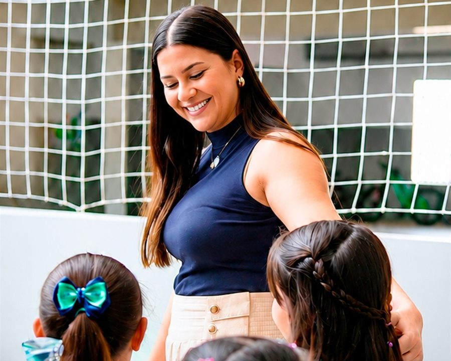
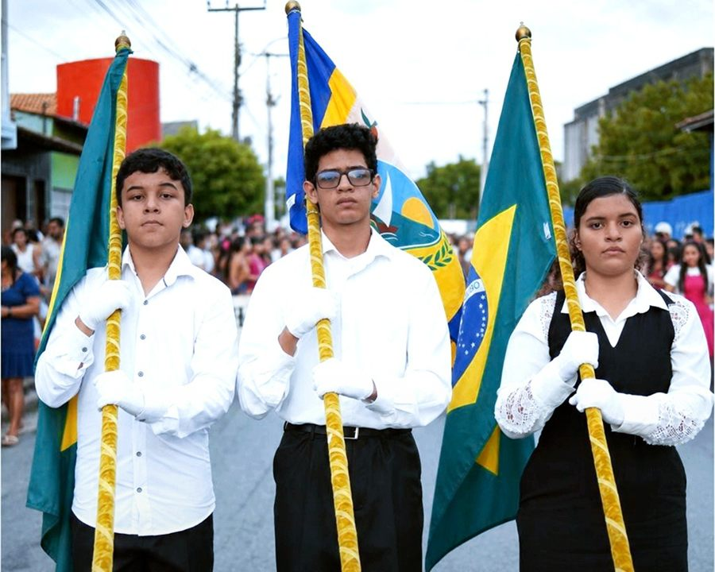

Sistema de ensino COC
Recursos e conteúdos pedagógicos que acompanham a construção do conhecimento.
Educação Infantil
Brincar, explorar e descobrir o mundo. Experiências que acolhem a curiosidade e dão espaço para cada nova conquista.
Converse com a equipe para conhecer as turmas, idades atendidas, turnos, rotina e materiais desta etapa.
Saiba mais sobre esta etapa
Fundamental · Anos Iniciais
Leitura, escrita e novos conhecimentos. Um percurso de aprendizagem que estimula a curiosidade e a confiança.
Converse com a equipe para conhecer as turmas, idades atendidas, turnos, rotina e materiais desta etapa.
Saiba mais sobre esta etapa
Fundamental · Anos Finais
Novos desafios, projetos e olimpíadas do conhecimento. Aprender a pensar, colaborar e construir o próprio caminho.
Converse com a equipe para conhecer as turmas, idades atendidas, turnos, rotina e materiais desta etapa.
Saiba mais sobre esta etapaParcerias que somam
Recursos e conteúdos pedagógicos que acompanham a construção do conhecimento.
Desenvolvimento socioemocional e reflexões sobre emoções, relações e convivência.
Matrículas 2027
Vamos conversar sobre o próximo capítulo da sua criança?